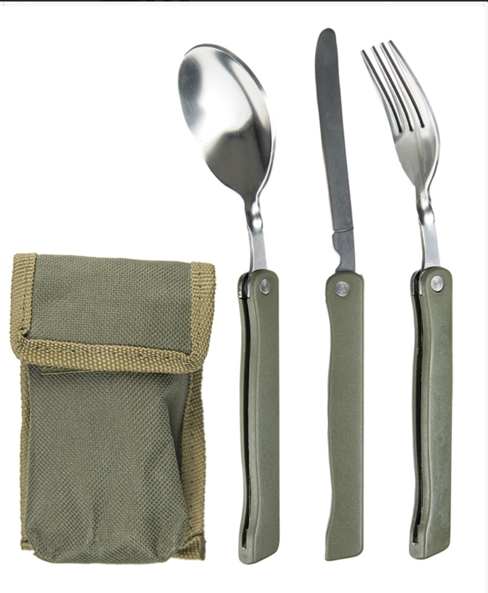
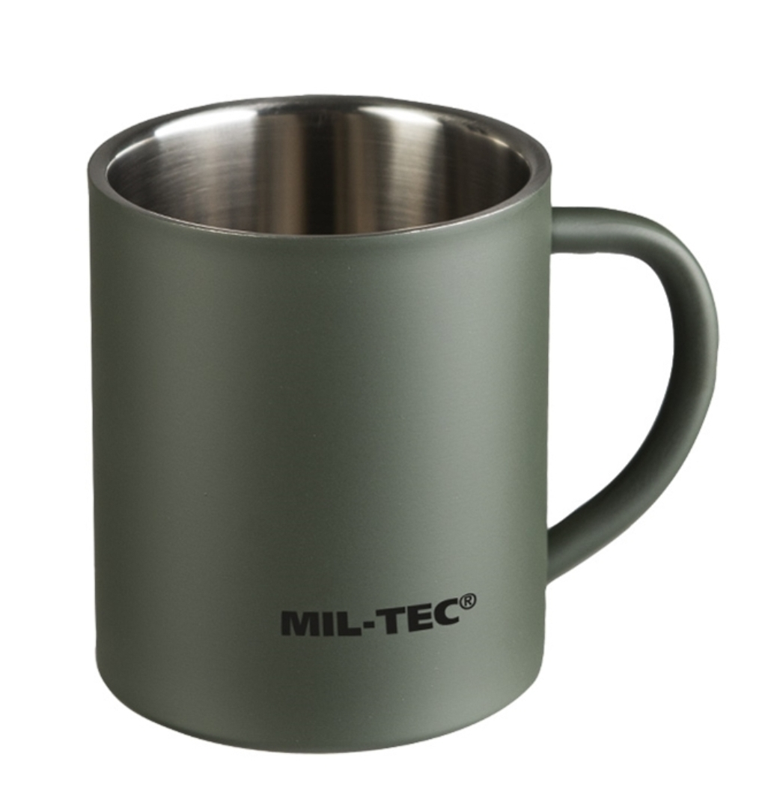
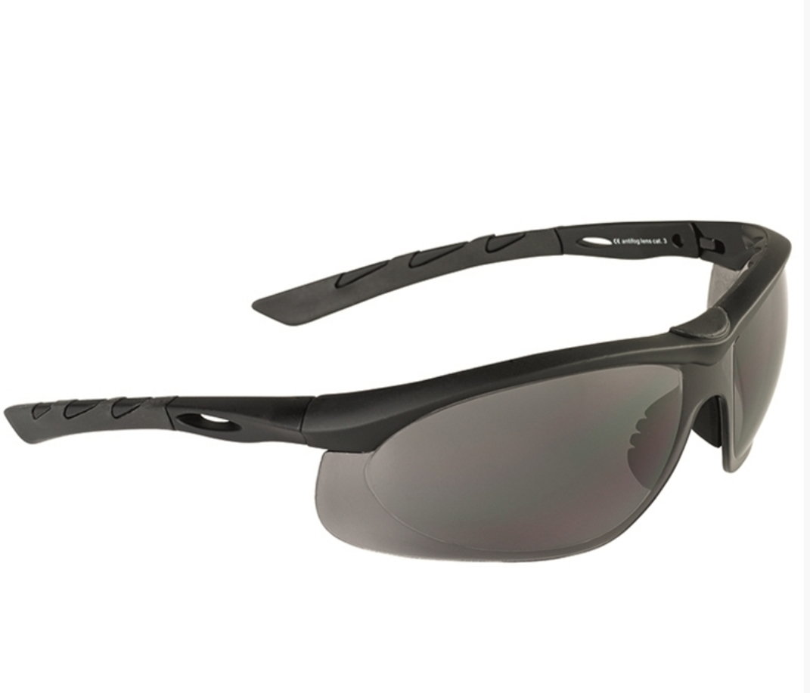

Portofel Militar oliv
25 Lei
Cod produs: A021
Descriere Produs:
-material poliester 600D -compartiment mare principal -compartiment pentru monede cu scai -3 buzunare

Briceag + Tacamuri de buzunar
30 Lei
Cod produs: A022
Descriere Produs:
-Cutit, furculita , lingura de inox
-Desfacator de conserve si sticle de inox
-Tirbuson
-Husa
-Greutate: circa 170 gr
-Dimensiune 12,5 x 5 x 2,5 cm
Set Vopsea pentru fata
20 Lei
Cod produs: A023
Descriere Produs:
Dimensiuni: 7.5 x 6 x 2cm
- 3 culori (negru, rosu, galben)
- cu oglindă
- ușor de aplicat si indepartat
- se pot vopsi fața și mainile cu dungi sau model.

Set placute ID aurii cu silencer
20 Lei
Cod produs: A024
Descriere Produs:
set placute ID aurii cu silencer
Set placute ID negre cu silencer
20 Lei
Cod produs: A025
Descriere Produs:
Set placute ID negre cu silencer
Set placute ID silver fara silencer
15 Lei
Cod produs: A026
Descriere Produs:
Set placute ID silver fara silencer

Lanterna cu banda pentru cap
45 Lei
Cod produs: A027
Descriere Produs:
Lamp: ABS plastic
Headband: 100% Polyester
Electricity supply: 3 x AAA (not included)
Dimensions Lamp: 59 x 54 x 72 mm
Weight: 78 g
Luminosity: 30 lumen
Burn time: ca. 15 hours
- 6 white LEDs and 1 red LED
- super bright light
- adjustable shining angle
- flexible adjustable headband
Lanterna cu Clips
25 Lei
Cod produs: A028
Descriere Produs:
Brightness 50 lumen
Burn time: 4-5 hours
Range: 20 m
Batteries: 2 x CR2032 (included)
- features strong clip
- can be fixed for example on baseball caps, backpacks or molle loops
- adjustable lamp head
- 5 LED lights

Lanterna Cozoroc
25 Lei
Cod produs: A029
Descriere Produs:
Electricity supply: 3 x lithium batteries
Dimensions: 8,2 x 5,5 x 2,5 cm
Weight: ca. 30 g
Luminosity: 15 lumen
Burn time: 3-4 hours
Max. range: 10 m
- 3 LED bulbs
- 10.000 hours brightness
- fits on any peaked cap
- batteries included
Lanterna Neagra LED
35 Lei
Cod produs: A030
Descriere Produs:
Dimensions: 10 x 3 cm
Weight: 100 g
Electricity supply: 3x Micro (AAA) batteries (included)
Luminosity: 20 lumen
Burn time: ca. 4 hours
Max. range: 30 m
- super bright light by 12 white LED′s
- 100.000 hours brightness
- handy by easy to grip, splash water protected casing
- removable hand loop

Tacamuri Pliabile
42 Lei
Cod produs: A031
Descriere Produs:
Stainless Steel
Handles: ABS plastic
Pouch: 100% Polyester
Weight (total): 155 g
Cutlery: 133 g
Length of cutlery: ca. 20 cm

Cana Rezistenta
? Lei
Cod produs: A032
Descriere Produs:
Stainless Steel
Capacity: 300 ml
Height: 9 cm
Diameter bottom: 7,5 cm
Weight: 120 g
- unbreakable
- mat od (perfect for outdoors)
Coyote Tactical S-Hook
5 Lei
Cod produs: A033
Descriere Produs:
Polyoxymethylene
Weight: 4 g
Length: 4,9 cm
- useable on both sides
- do not use for climbing
Dopuri Urechi + Cutie
15 Lei
Cod produs: A034
Descriere Produs:
Plugs: 100% silica gel
Box: 100% Polypropylene
Caiet Notite Multitarn
60 Lei
Cod produs: A035
Descriere Produs:
Upper: 100% Polyester, Polyurethane coated
Lining: 100% Polyester
Dimensions: 18,5 x 3,5 x 24,5 cm
Weight: 390 g
- tactical, upholstered notebook with hook and loop closure
- hook and loop closure area to fix patches
- including removable and replaceable notepad
- 2 pen holders inside
- several pockets for documents
- including removable Mil-Tec® patch
Elastic Shock With Hooks
25 Lei
Cod produs: A036
Descriere Produs:
Elastic shock cord: 100% Latex
Hook: Steel
Width: 6 mm
Length: 75 cm
- to protect or rather to fix equipment

Smoke Tactical Goggles Swiss Eye
110 Lei
Cod produs: A037
Descriere Produs:
Lens: 100% Polycarbonate
- lightweight protection goggles with rubberized, ridged legs
- optimal suitable by wearing acoustic earmuffs because of the flat legs
- legs for inclination
- with antifog and antiscratch coating
- 100% UVA-, UVB- and UVC-protection up to 400 nm
- including microfiber pouch
Toc Pistol cu Bretele Oliv
? Lei
Cod produs: A038
Descriere Produs:
Upper: 100% Nylon
Lining: 100% Nylon
Straps: 100% Polyester
- shoulder holster for vertically wearing- and horizontally pulling-way
- magazine pocket with hook and loop closure
- holster and magzine pocket are unclipable and can be arranged for right- and left-hander
- adjustable fastener
- shoulder rests with breathable net material on the inside and elastic stretch part with ring fixation on the back
- elastic belt loops (adjustable by hook and loop closure)
Toc Pistol Picior
? Lei
Cod produs: A039
Descriere Produs:
100% Nylon (Cordura)
Upholstery: EVA foam (130 g/qm)
- adjustable belt strap with buckle
- adjustable weaponsecurestrap for individual adjustment
- flexible leg strap for highest wearing comfort
- magazine pocket with hook and loop closure
Toc Pistol Picior Oliv
? Lei
Cod produs: A040
Descriere Produs:
100% Polyester, Polyvinylchlorid coated
- for all common pistols
- patch magazine pockets on the side
- adjustable wappensecurestrap with hook and loop closure
- elastic and adjustable leg loop
- extension for fixation on service belt